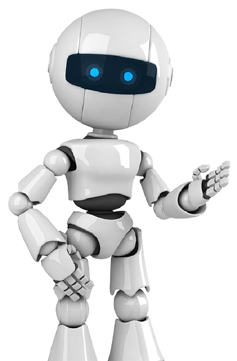
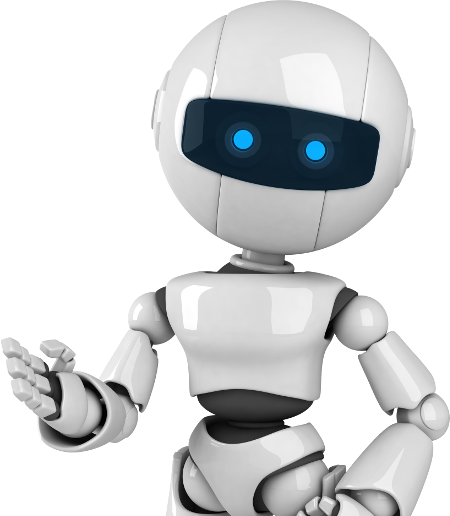
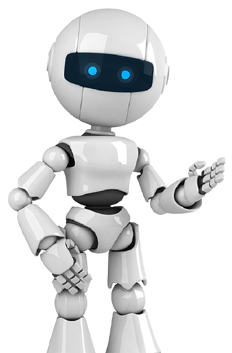
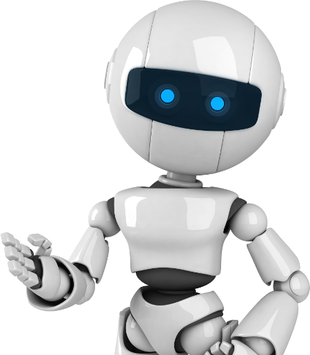

La inteligencia artificial (IA) es un campo de la informática que se centra en la creación de sistemas y programas capaces de realizar tareas que normalmente requieren inteligencia humana. En un sentido amplio, la inteligencia artificial se refiere al desarrollo de algoritmos y modelos computacionales que imitan o replican aspectos del pensamiento humano y la capacidad de aprendizaje. La IA busca desarrollar sistemas que puedan realizar tareas como reconocimiento de patrones, toma de decisiones, resolución de problemas, comprensión del lenguaje natural, percepción visual y auditiva, entre otros. Estos sistemas pueden emplear una variedad de técnicas y enfoques, incluyendo el aprendizaje automático, el procesamiento del lenguaje natural, la visión por computadora, la robótica, y más recientemente, el aprendizaje profundo. El aprendizaje automático (machine learning) es una subdisciplina importante de la IA que se centra en el desarrollo de algoritmos y modelos que permiten a las computadoras aprender patrones y hacer predicciones a partir de datos. Estos modelos pueden entrenarse utilizando conjuntos de datos y técnicas de optimización para mejorar su desempeño con el tiempo. Por otro lado, el aprendizaje profundo (deep learning) es una técnica de aprendizaje automático que utiliza redes neuronales artificiales con múltiples capas para modelar y aprender representaciones de datos de alto nivel. Esta técnica ha demostrado ser especialmente efectiva en tareas como reconocimiento de imágenes, procesamiento de lenguaje natural y juegos estratégicos. La inteligencia artificial tiene aplicaciones en una amplia gama de campos, incluyendo la medicina, la ingeniería, la industria automotriz, la agricultura, la educación, el comercio electrónico, la seguridad, entre otros. A medida que la tecnología continúa avanzando, se espera que la inteligencia artificial desempeñe un papel cada vez más importante en la automatización de tareas, la optimización de procesos y la creación de soluciones innovadoras para problemas complejos. Sin embargo, también plantea desafíos éticos y sociales relacionados con la privacidad, la seguridad, el sesgo algorítmico y el impacto en el empleo y la sociedad en general.
 



Las características de la inteligencia artificial (IA) pueden ser amplias y diversas, ya que este campo abarca una variedad de tecnologías, enfoques y aplicaciones. Aquí hay algunas características importantes de la inteligencia artificial: